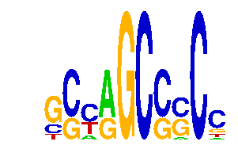

family_16 |
|---|
|  |
| Download PWM |
| Download instances (motifs) |
| Show motif distribution |
Query_ID | Query_Consensus | Subject_Name | Source_DB | Subject_ID | Length | Orientation | Offset | Divergence | Overlap | Subject_Consensus |
|---|
Sequence | Start_position (from start) | Start_position (from end) | Average conservation | Best conservation score | Instance_with_best_CS | Best_Z-score | Instance_with_best_ZS | Strand |
|---|---|---|---|---|---|---|---|---|
| chrX:20193686-20194686 | 664 | 674 | 0.8888 | 0.98 | GSCAGCGRC. | 12.710033 | GSCAGCGRC. | 1 |
| chr11:88006704-88007704 | 943 | 953 | 0.151 | 0.237 | GSCAGCSGC. | 12.710033 | GSCAGCGRC. | 1 |
| chr3:10205625-10206625 | 285 | 295 | 0.0003 | 0.001 | .CWRGCCCCC | 12.747894 | .CWRGCCCCC | 1 |
| chr8:87888211-87889211 | 821 | 831 | 0.0028 | 0.007 | .CWRGCCCCC | 12.747894 | .CWRGCCCCC | -1 |
| chr1:174149318-174150318 | 451 | 461 | 0.9842 | 0.996 | GSCAGCSGC. | 17.429142 | GSCAGCSGC. | 1 |
| chr6:86465629-86466629 | 12 | 22 | 0.4801 | 0.557 | .CWRGCCCCC | 12.747894 | .CWRGCCCCC | 1 |
| chr4:134730734-134731734 | 812 | 822 | 0.7661 | 1 | GSCAGCSGC. | 17.429142 | GSCAGCSGC. | 1 |
| chr7:51737452-51738452 | 680 | 690 | 0.0072 | 0.016 | .CWRGCCCCC | 12.747894 | .CWRGCCCCC | 1 |
| chr19:10299281-10300281 | 558 | 568 | 0.9949 | 1 | .CWRGCCCCC | 12.747894 | .CWRGCCCCC | 1 |
| chr1:137695826-137696826 | 114 | 124 | 0.7472 | 0.997 | GSCAGCSGC. | 12.710033 | GSCAGCGRC. | 1 |
| chr15:103138701-103139701 | 547 | 557 | 0.0605 | 0.31 | .CWRGCCCCC | 12.747894 | .CWRGCCCCC | 1 |
| chr8:73986941-73987941 | 347 | 357 | 0.0011 | 0.003 | GSCAGCGRC. | 12.710033 | GSCAGCGRC. | 1 |
| chr7:134170729-134171729 | 173 | 183 | 1 | 1 | GSCAGCGRC. | 17.429142 | GSCAGCSGC. | 1 |
| chr7:150644976-150645976 | 368 | 378 | 0.9339 | 0.969 | .CWRGCCCCC | 12.747894 | .CWRGCCCCC | 1 |
| chr11:87982958-87983958 | 325 | 335 | 0.0088 | 0.051 | GSCAGCGRC. | 17.429142 | GSCAGCSGC. | 1 |
| chr16:38362422-38363422 | 358 | 368 | 0.1583 | 0.622 | GSCAGCSGC. | 17.429142 | GSCAGCSGC. | 1 |
| chr11:107371381-107372381 | 681 | 691 | 0.0573 | 0.073 | .CWRGCCCCC | 12.747894 | .CWRGCCCCC | 1 |
| chr19:10299281-10300281 | 551 | 561 | 0.9974 | 1 | GSCAGCSGC. | 17.429142 | GSCAGCSGC. | 1 |
| chr19:10299281-10300281 | 751 | 761 | 0.01 | 0.066 | GSCAGCGRC. | 12.710033 | GSCAGCGRC. | 1 |
| chr10:79537530-79538530 | 567 | 577 | 0.0232 | 0.059 | GSCAGCSGC. | 17.429142 | GSCAGCSGC. | 1 |
| chr8:73986941-73987941 | 663 | 673 | 0.0027 | 0.006 | GSCAGCSGC. | 17.429142 | GSCAGCSGC. | 1 |
| chr4:107518583-107519583 | 347 | 357 | 1 | 1 | GSCAGCGRC. | 12.710033 | GSCAGCGRC. | 1 |
| chr8:86099626-86100626 | 927 | 937 | 0.0008 | 0.002 | .CWRGCCCCC | 12.747894 | .CWRGCCCCC | -1 |
| chr4:140977485-140978485 | 686 | 696 | 0.0015 | 0.004 | GSCAGCSGC. | 17.429142 | GSCAGCSGC. | -1 |
| chr15:36538708-36539708 | 468 | 478 | 0 | 0 | .CWRGCCCCC | 12.747894 | .CWRGCCCCC | 1 |
| chr1:174149318-174150318 | 149 | 159 | 0 | 0 | .CWRGCCCCC | 12.747894 | .CWRGCCCCC | 1 |
| chr10:128020236-128021236 | 477 | 487 | 0.9966 | 1 | .CWRGCCCCC | 12.747894 | .CWRGCCCCC | 1 |
| chr3:10207108-10208904 | 1537 | 1547 | 0.265 | 0.817 | .CWRGCCCCC | 12.747894 | .CWRGCCCCC | -1 |
| chr7:19996118-19997118 | 9 | 19 | 0.7539 | 0.909 | .CWRGCCCCC | 12.747894 | .CWRGCCCCC | -1 |
| chr7:4466899-4467899 | 582 | 592 | 0.001 | 0.004 | .CWRGCCCCC | 12.747894 | .CWRGCCCCC | 1 |
| chr15:36538708-36539708 | 156 | 166 | 0.1011 | 0.373 | GSCAGCSGC. | 17.429142 | GSCAGCSGC. | -1 |